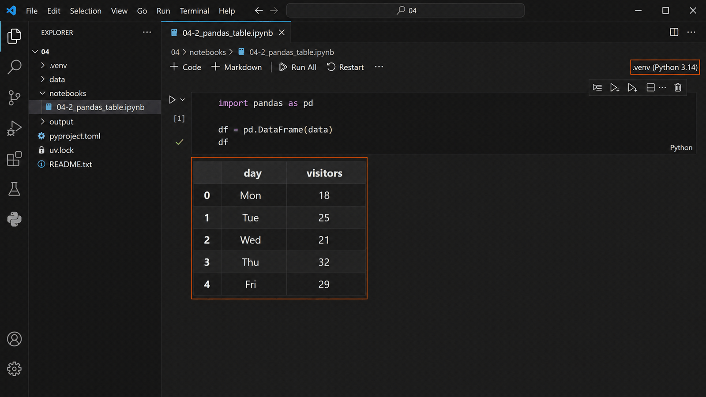

pandas로 표 데이터를 쉽게 사용하기 用 pandas 更轻松地处理表格数据
한 사람을 이름표 묶음으로 적었다把一个人写成名牌集合
3-2에서 자기 자신을 이름표 묶음으로 적었습니다. 이름표 하나에 값 하나였습니다.在 3-2 把自己写成了名牌集合。一个名牌对应一个值。
student = {
"name": "민준",
"score": 85,
}
print(student["name"])민준
그런데 한 사람이 아니라 다섯 날의 이용 인원을 담으려면 어떻게 할까요? 이름표는 그대로 두고 값을 여러 개 넣습니다.但如果要装的不是一个人，而是五天的使用人数呢？名牌不变，值放多个。
data = {
"day": ["Mon", "Tue", "Wed", "Thu", "Fri"],
"visitors": [18, 25, 21, 32, 29],
}
print(data){'day': ['Mon', 'Tue', 'Wed', 'Thu', 'Fri'], 'visitors': [18, 25, 21, 32, 29]}이걸 표 모양으로 보고 싶다想把它看成表格的样子 핵심核心
print로는 한 줄로 길게 나옵니다. 값이 다섯 개일 때도 읽기 힘든데, 서른 개면 못 읽습니다.用 print 会挤成很长的一行。五个值就不好读了，三十个就读不了。
| 이름표名牌 | 들어 있는 값里面的值 |
|---|---|
day | Mon · Tue · Wed · Thu · Fri |
visitors | 18 · 25 · 21 · 32 · 29 |
이름표를 세로 줄로 세우고 값을 가로 줄로 늘어놓으면 표가 됩니다. 그 일을 대신해 주는 도구가 있습니다.把名牌立成竖列，值排成横行，就成了表格。有工具可以代做这件事。
도구가 없으면 또 멈춘다没有工具就又停下来 실습实践
4-1에서 겪은 것과 똑같은 일이 한 번 더 일어납니다. 이번에도 오류가 나야 정상입니다.会再发生一次和 4-1 完全一样的事。这次也是报错才正常。
import pandas as pd
ModuleNotFoundError: No module named 'pandas'
uv add pandas
uv add 하고 커널을 다시 시작한 뒤 같은 셀을 다시 실행합니다. 4-1과 같은 순서입니다. 도구마다 한 번씩 가져오면 됩니다.uv add 之后重启内核，再运行同一个单元格。和 4-1 顺序一样。每个工具拿一次就行。
pandas는 도구, DataFrame은 표pandas 是工具，DataFrame 是表 핵심核心
오늘 새 이름이 두 개 나옵니다. 헷갈리기 쉬우니 한 번에 갈라 둡니다.今天出现两个新名字。容易混，先分清楚。
| 이름名字 | 무엇인가是什么 | 견주면打个比方 |
|---|---|---|
pandas | 표를 다루는 도구处理表格的工具 | Matplotlib 같은 라이브러리像 Matplotlib 那样的库 |
DataFrame | 그 도구가 만든 표那个工具做出的表 | 도구로 만들어 낸 물건用工具做出来的东西 |
import pandas as pd에서 as pd는 짧게 부르겠다는 뜻입니다. 앞으로 pandas 대신 pd라고 씁니다.import pandas as pd 里的 as pd 意思是用短名字来叫它。以后写 pd 代替 pandas。
dict가 그대로 표가 된다dict 直接变成表 실습实践
같은 data입니다. 모양만 바뀝니다.还是同一个 data，只是样子变了。
import pandas as pd df = pd.DataFrame(data) df

표를 받으면 먼저 보는 세 가지拿到表格先看的三样 핵심核心
표를 받으면 값을 읽기 전에 표의 모양부터 봅니다. 세 가지면 됩니다.拿到表格，先看表的形状再读值。三样就够了。
print("행과 열:", df.shape)
print("열 이름:", list(df.columns))
print("가장 큰 값:", df["visitors"].max())행과 열: (5, 2) 열 이름: ['day', 'visitors'] 가장 큰 값: 32
| 보는 것看什么 | 알 수 있는 것能知道什么 |
|---|---|
df.shape | 행이 몇 개, 열이 몇 개有几行、几列 |
df.columns | 열 이름이 무엇인가列名是什么 |
.max() | 그 열에서 가장 큰 값那一列里最大的值 |
열 이름만 적으면 된다只写列名就行 핵심核心
4-1에서는 목록 두 개를 따로 넘겼습니다. pandas는 열 이름만 적습니다.在 4-1 要分别传两个列表。pandas 只写列名。
plt.bar(days, visitors)
df.plot(x="day", y="visitors", kind="bar")
표 안에 이름이 이미 붙어 있기 때문입니다. 값을 따로 챙겨 넘길 필요가 없습니다. 3-2에서 배운 「번호로 세지 않고 이름으로 찾는다」가 여기서도 그대로입니다.因为表里已经有名字了，不用另外把值挑出来传。3-2 学的“不数号码，用名字找”在这里同样成立。
표에서 그래프까지 이어진다从表格直接连到图表 실습实践
ax = df.plot(x="day", y="visitors", kind="bar", legend=False,
color="#72757d", figsize=(8, 4.5))
ax.set_ylim(0, 36)
ax.set_title("Visitors by Day")
ax.set_xlabel("Day")
ax.set_ylabel("Visitors (people)")
labels = ax.bar_label(ax.containers[0])
그래프 안의 글자는 4-1과 마찬가지로 영문으로 씁니다. 한글로 쓰면 네모로 나옵니다.图表里的文字和 4-1 一样用英文。写韩文会变成方块。
쉽게 그렸어도 확인은 남는다画得再容易，核对还是要做 핵심核心
코드가 짧아진 것이지 확인할 일이 줄어든 것이 아닙니다. 여섯 가지를 원본과 맞춰 봅니다.只是代码变短了，要确认的事并没有减少。把六项和原始数据对一遍。
| 확인할 것要确认的 | 원본原始数据 |
|---|---|
| 행 수行数 | 5 |
| 열 이름列名 | day · visitors |
| 같은 행의 값同一行的值 | Thu는 32Thu 是 32 |
| 가장 큰 값最大值 | 32 |
| 막대 개수와 높이柱子数量和高度 | 5개 · 표와 같음5 个 · 与表相同 |
| 제목 · 축 이름 · 단위标题 · 轴名 · 单位 | 모두 있음都有 |
설명 없이 표 하나만 놓는다不加说明，只放一张表 핵심核心
이번에는 처음 보는 표입니다. 아무 설명 없이 표만 놓았습니다. 무엇을 담은 표인지 읽어 보세요.这次是第一次见的表。没有任何说明，只放了表。读读看它装的是什么。
| club | members |
|---|---|
| 밴드 | 12 |
| 미술 | 8 |
| 코딩 | 15 |
| 독서 | 6 |
이 표는 수업용 가상 자료입니다. 실제 우리 학교 동아리 인원이 아닙니다.这是课堂用的虚拟资料，不是本校社团的实际人数。
파일로도 들어 있습니다. 04 폴더의 data/04-2_clubs.csv입니다.文件也在里面 — 04 文件夹的 data/04-2_clubs.csv。
표를 말로 옮기는 세 가지把表格转成语言的三样 핵심核心
표를 설명한다는 것은 세 가지를 말하는 것입니다. 앞의 요일 표로 연습해 봅니다.说明一张表，就是说出三样东西。用前面的星期表练习一下。
| 무엇을说什么 | 요일 표라면用星期表来说 |
|---|---|
| 대상 — 무엇에 대한 표인가对象 — 关于什么的表 | 어떤 곳의 요일별 이용 인원某个地方每天的使用人数 |
| 한 행 — 한 줄이 무엇 하나인가一行 — 一行代表一个什么 | 하루一天 |
| 열과 단위 — 각 열이 무엇이고 단위는列和单位 — 每列是什么、单位是什么 | day는 요일, visitors는 사람 수(명)day 是星期，visitors 是人数（人） |
한 행이 무엇 하나인지가 가장 자주 틀립니다. 요일 표의 한 행은 「하루」지 「한 사람」이 아닙니다.一行代表一个什么是最常搞错的。星期表的一行是「一天」，不是「一个人」。
이 표를 설명한다说明这张表 실습实践
앞의 동아리 표를 보고 다섯 칸을 채웁니다. 표를 처음 보는 사람에게 말하듯 적습니다.看着前面的社团表填写五栏。像对第一次看到这张表的人说话那样写。
| # | 적을 것要写的 | 내가 적는 답我写的答案 |
|---|---|---|
| 1 | 대상 — 무엇에 대한 표인가对象 — 关于什么的表 | |
| 2 | 한 행 — 한 줄은 무엇 하나인가一行 — 一行代表一个什么 | |
| 3 | club 열은 무엇이고 단위는club 列是什么，单位是什么 | |
| 4 | members 열은 무엇이고 단위는members 列是什么，单位是什么 | |
| 5 | 이 표로 답할 수 있는 질문 하나这张表能回答的一个问题 |
- 다섯 칸을 모두 문장으로 적었다. 단어만 적지 않았다.五栏都用句子写了，不是只写词。
- 한 행이 「한 동아리」라고 적었다.写了一行是「一个社团」。
열 이름만으로는 모르는 것이 있다光看列名有些事不知道 핵심核心
표를 다 설명했다고 다 아는 것이 아닙니다. 표에 안 적힌 것이 있습니다.说明完表格不等于全都知道了。有些东西表里没写。
동아리 표에 안 적힌 것들社团表里没写的东西 핵심核心
| 안 적힌 것没写的 | 모르면 생기는 일不知道会怎样 |
|---|---|
| 언제 센 인원인가什么时候数的人数 | 작년 것이면 지금과 다르다如果是去年的，和现在不一样 |
| 정원인가 실제 인원인가是名额还是实际人数 | 15명이 꽉 찬 것인지 알 수 없다不知道 15 人是不是已经满了 |
| 한 사람이 여러 동아리에 들 수 있나一个人能加入多个社团吗 | 전부 더해도 학생 수가 안 나온다全加起来也不等于学生总数 |
| 전체 동아리가 이 넷뿐인가全部社团就这四个吗 | 빠진 동아리가 있으면 비교가 틀린다如果漏了社团，比较就不对 |
이건 표가 잘못 만들어진 것이 아닙니다. 표는 원래 다 담지 못합니다. 그래서 만든 사람에게 묻는 것이 일의 일부입니다.这不是表做错了。表本来就装不下全部。所以去问做表的人本身就是工作的一部分。
만든 사람에게 물어볼 것要问做表的人的问题 실습实践
동아리 표를 받았다고 생각하고, 표를 만든 사람에게 물어볼 것 세 가지와 그 이유를 적습니다.假设你收到了社团表，写下要问做表的人的三个问题和理由。
| # | 물어볼 것要问的 | 왜 물어보나为什么问 |
|---|---|---|
| 1 | ||
| 2 | ||
| 3 |
- 세 질문이 서로 다른 것을 묻고 있다.三个问题问的是不同的事。
- 이유 칸에 「모르면 무엇이 틀어지는지」를 적었다.理由栏写了「不知道会出什么问题」。
- 표에 이미 적힌 것은 묻지 않았다.没有问表里已经写了的东西。
다음 시간은 수행평가다下节课是评价 평가评价
다음 시간(5회)은 수행평가 1입니다. 새로 배우는 것은 없습니다. 오늘까지 한 것을 혼자 해내는 시간입니다.下节课（第 5 次）是评价 1。没有新内容，是把今天为止学的自己做一遍的时间。
| 수행평가에서 하는 일评价中要做的 | 오늘 어디서 했나今天在哪里做过 |
|---|---|
| 지정된 그래프를 완성한다完成指定的图表 | 4-1 · AI 요청과 실행4-1 · AI 请求与运行 |
| 원본 데이터와 대조한다与原始数据核对 | 4-1 다섯 항목 · 4-2 여섯 항목4-1 五项 · 4-2 六项 |
| 표를 설명해 적는다写出对表格的说明 | 4-2 워크시트 ①4-2 练习纸 ① |
오늘 채운 워크시트 두 개를 04 폴더에 남겨 두세요. 다음 시간에 펴 놓고 해도 됩니다.把今天填的两张练习纸留在 04 文件夹。下节课可以摊开来参考。
오늘 남길 것今天要留下的
- pandas는 도구, DataFrame은 그 도구가 만든 표다.pandas 是工具，DataFrame 是它做出的表。
- dict의 이름표가 표의 열 이름이 된다.dict 的名牌变成表的列名。
- 열 이름으로 표와 그래프를 짧게 이을 수 있다.可以用列名把表格和图表简短地连起来。
- 표를 설명하는 것은 대상 · 한 행 · 열과 단위를 말하는 것이다.说明一张表就是说出对象 · 一行 · 列和单位。
- 표에 안 적힌 것은 만든 사람에게 묻는다.表里没写的就去问做表的人。
오늘 채운 워크시트는 JDH_VibeCoding_자기이름 안 04 폴더에 남깁니다. 6주차에 「내 서비스는 무엇을 기억해야 하는가」를 정할 때도 다시 씁니다.今天填写的练习纸留在 JDH_VibeCoding_自己的名字 里的 04 文件夹。第 6 周决定「我的服务要记住什么」时会再用。
다음 시간은 수행평가 1입니다. 지정된 그래프를 완성하고 원본과 대조해 적습니다.下节课是评价 1。要完成指定的图表并与原始数据核对后写下来。